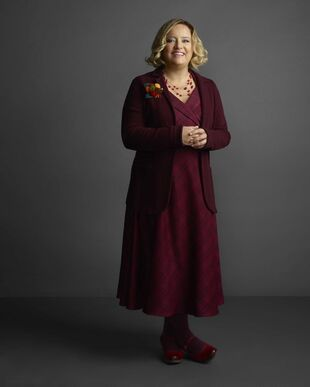
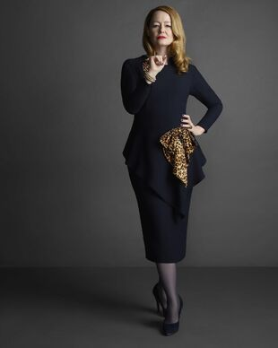
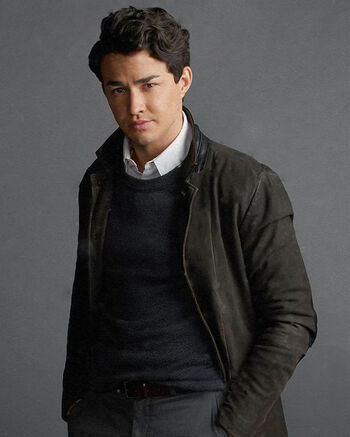
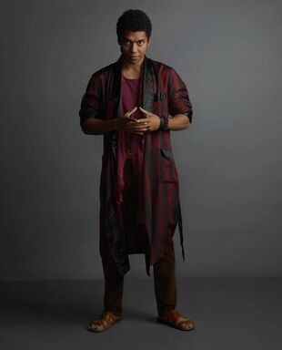

Argumento
Esta adaptación re-imagina el origen y las aventuras de Sabrina, la bruja adolescente , con una historia actual, que agrega terror, ocultismo, y obviamente, brujería. Después de cumplir 16 y recibir la noticia de que es mitad bruja, Sabrina deberá equilibrar una parte de su vida entre entre demonios y hechizos, y otra parte como una adolescente común, mientras lucha contra fuerzas que amenazan a la tierra, y a todos sus seres queridos. No todo será difícil para Sabrina, pues contará con la ayuda de sus tías, Hilda y Zelda, que compartirán todo el conocimiento posible con la joven bruja; además de contar con un adorable gato negro llamado Salem, que estará con ella en todas sus aventuras. Este nuevo show se aleja del ambiente entre comedia y terror que tenía la adaptación anterior de 1996 con Melissa Joan Hart , y se enfoca en un ambiente mucho más obscuro. El mundo oculto de Sabrina es una serie estadounidense de terror y fantasía, creada por Roberto Aguirre-Sacasa, y basada en una colección de comics con el mismo nombre, lanzados por el sello Archie cómics. Netflix es el encargado de la producción y transmisión de la serie.
Personajes
| Foto | Personaje | Actor/Actriz | Ocupacion | Historia | Parentesco |
|---|---|---|---|---|---|
| Sabrina Spellman | Kierna shipka | Estudiante | Es una adolescente bruja, vive en una funeraria justo a sus tias y primo. Asiste a la secundaria Baxter y a la academia de las artes ocultas | Hija de lucifer luz de la mañana y la mortal Diana Spellman. Sobre de Hilda y Zelda Spellman. Prima de Ambroce | |
| Harvey Dwight Kinkle | Ross Lynch | Estudiante | Es un estudiante humano de la secundaria Baxter. Su padre es encargado de las minas de carbon del pueblo al sur de Greendale. Se encontró con el señor oscuro mientras de niño jugaba al escondiste cerca de greendale mine. | Novio de Sabrina en la primera temporada. Novio de Rosalind Walker en la segunda temporada | |
|  | Hilda Spellman | Lucy Davis | Barista en la tienda de libros Cerberus. Herbóloga. Partera | Es una bruja excomulgada de la iglesia de la noche | Hermana de Zelda y Edward Spellman, Tia de Ambroce y Sabrina |
|  | Zelda Piona Spellman | Miranda Otto | Directora de la academia de las artes ocultas | Es la cabeza de la familia Spellman.Fue una bruja que asistio a la academia de las artes ocultas donde era popular y sobresaliente | Hermana de Hilda y Edward Spellman. Tia de Sabrina y Ambroce |
|  | Nicholas Scractch | Gavin Lethewood | Brujo y estudiante | Es un brujo que se hace amigo de Sabrina en la academia de las artes ocultas bajo las ordenes del señor oscuro | novio de sabrina |
|  | Ambroce Spellman | chance Perdomo | Brujo y funerario en la Funeraria Spellman | es un brujo bisexual de Inglaterra. Intentó explotar el Vaticano, por lo cual fue puesto bajo arresto domiciliario en la Funeraria Spellman por la Corte de las Brujas. Después de 75 años fue liberado por el Padre Blackwood. | Primo de Sabrina |
Temporadas
| Temporadas | Cantidad de capitulos | Año de estreno | Trailer |
|---|---|---|---|
| 1 | 11 capitulos | 2018 | |
| 2 | 9 capitulos | 2019 | |
| 3 | 8 capitulos | 2020 | |
| 4 | 8 capitulos | Proximante | proximamente |
Merchandising
Muñeco de Sabrina y su gato Salem
taza de sabrina
Remera de Sabrina
almohada